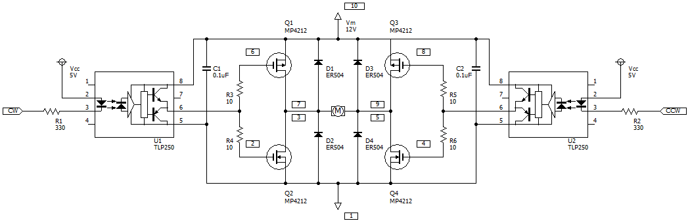
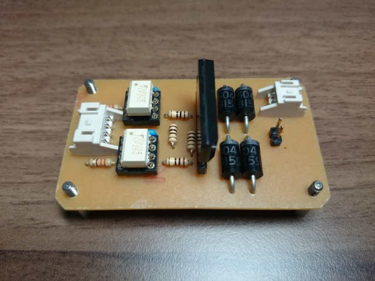
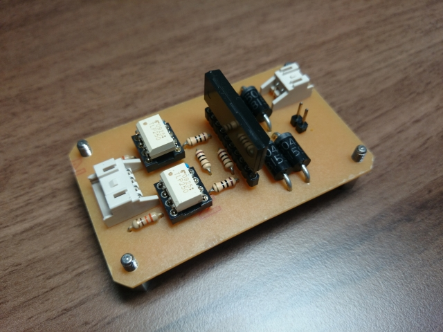
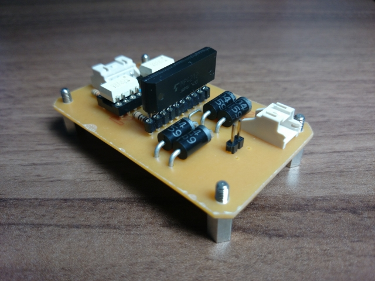

FETモジュール MP4212を使用したモータドライバ
Nch MOS FETとPch MOS FETで構成するモータドライバ
PICなどのマイコンの入出力ポートの最大定格電流は20mA程度であるため，マイコンの制御信号を直接使用して直接モータを回転させることはできません． ゆえに，マイコンの制御信号でモータの回転を制御するためには，何らかの制御信号の増幅回路が必要となります．これが一般にモータドライバと呼ばれている回路です． 本ページでは，FETを使用してモータドライバを構成した例を紹介したいと思います．
ここでは詳細な回路動作などの説明は割愛して，とりあえず動くモノを作ることに重点を置きました． ここで紹介する回路は最大定格電圧12Vの鉄道模型（Nゲージ）のモータ制御のために製作したものですので，大抵の小型モータであれば制御することが可能だと思います．
ホビー用途のHブリッジ回路製作に最適！FETモジュール MP4212
FETでHブリッジ回路を構成しようとした場合，最低でも4個のFETが必要になります． 今回は極力部品点数を少なく，比較的簡単に製作できる設計にしたかったので，東芝のFETモジュール MP4212を採用することにしました． MP4212には，NchとPchのFETが各2個ずつ合計4個のFETがパッケージされており，Hブリッジ回路の構成に適していると思います． 小型のパッケージですが，比較的大電力を高速にスイッチングできるほか，4Vからの駆動に対応しており，ホビー用途には嬉しい仕様ではないかと思います． MP4212のデータシートはインターネット上からダウンロードできます．
参考文献
モータドライバの設計・製作にあたり，下記のWebページを参考にさせていただきました． リンク先では一般的なFETを4個使用してモータドライバを構成されていますが，これをMP4212に置き換えることにしました．
回路
回路図
回路図を下に示します．部品点数も少なく，実装面積をコンパクトに収めることができそうです． 電源電圧は12Vで，マイコンからの制御信号の電圧は5Vを想定しています． 信号線は2本で，「正転」，「逆転」，「ブレーキ」の3動作を実現できます． この回路ではモータの2端子が開放状態になることがありませんので，「ストップ（フリー）」の動作はできません．
{kind=link}
使用部品
下表に使用部品の一覧を示します．参考単価をクリックすると，秋月電子通商，共立エレショップまたはマルツパーツ館のページに飛びます． コネクタ類は，モータドライバの使用用途に応じて各自で変更してください．
| 番号 | 部品名 | 型番 | 数量 | 参考価格 |
|---|---|---|---|---|
| R1, R2 | 炭素皮膜抵抗 | 各社 1/4W 330Ω | 2 | 1円 |
| R3 - R6 | 炭素皮膜抵抗 | 各社 1/4W 10Ω | 4 | 1円 |
| C1, C2 | 積層セラミック コンデンサ |
村田製作所 50V 0.1µF | 1 | 10円 |
| U1, U2 | フォトカプラ | 東芝 TLP250 | 2 | 150円 |
| D1 - D4 | ファストリカバリ ダイオード |
PANJIT ER504 | 4 | 35円 |
| Q1 - Q4 | FETモジュール | 東芝 MP4212 | 1 | 250円 |
| 基板 | サンハヤト 銅張積層板 17 | 1 | 572円 | |
| ICソケット | 各社 丸ピン DIP 8ピン | 2 | 15円 | |
| XAコネクタ | JST XAコネクタ ベース付ポスト サイド型 4P | 1 | 104円 | |
| XAコネクタ | JST XAコネクタ ベース付ポスト サイド型 2P | 1 | 64円 | |
| ピンヘッダ | 各社 I型 1列40ピン | 1 | 40円 |
完成
PWMによるモータの回転速度制御との相性も良く，約20kHzという高速なPWM信号でもスムースにモータの回転速度を変化させることが可能でした． 20KHz付近になると可聴域の上限に近いので，モータの動作音は大変静かに感じられます．
  {kind=link}
{kind=link}
{kind=link}